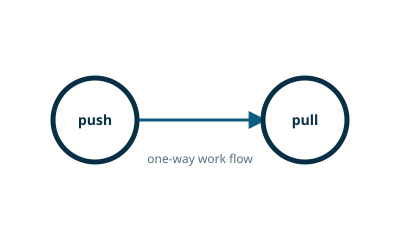

nng-rs / Rust pattern guide

PUSH / PULL — One-Way Pipe
PUSH / PULL distributes independent work from senders to receivers.
nng-rs is an independently maintained Rust binding for NNG. Its maintainers and release cycle are separate from the NNG core project.
This example is sourced from the project’s default branch. See the upstream example for its current history.
pipeline.rs
//! Pipeline (one-way pipe) example.
//!
//! This pattern is useful for solving producer/consumer problems, including load-balancing.
//! Messages flow from the push side to the pull side. If multiple peers are connected, the pattern
//! attempts to distribute them fairly.
//!
//! This example was derived from [this NNG example][1].
//!
//! [1]: https://nanomsg.org/gettingstarted/nng/pipeline.html
use nng::{Error, Protocol, Socket};
use std::{env, process, str, thread, time::Duration};
/// Entry point of the application.
pub fn main() -> Result<(), Error> {
let args: Vec<_> = env::args().take(4).collect();
match &args[..] {
[_, t, url] if t == "pull" => pull(url),
[_, t, url, arg] if t == "push" => push(url, arg),
_ => {
println!("Usage: pipeline pull|push <URL> <ARG> ...");
process::exit(1);
}
}
}
/// Pull socket.
fn pull(url: &str) -> Result<(), Error> {
let s = Socket::new(Protocol::Pull0)?;
s.listen(url)?;
loop {
let msg = s.recv()?;
let arg = str::from_utf8(&msg).expect("message has invalid UTF-8");
println!("PULL: RECEIVED \"{}\"", arg);
}
}
/// Push socket.
fn push(url: &str, arg: &str) -> Result<(), Error> {
let s = Socket::new(Protocol::Push0)?;
s.dial(url)?;
println!("PUSH: SENDING \"{}\"", arg);
s.send(arg.as_bytes())?;
// Wait for messages to flush before shutting down.
thread::sleep(Duration::from_secs(1));
Ok(())
}
Run it
cargo run --example pipeline